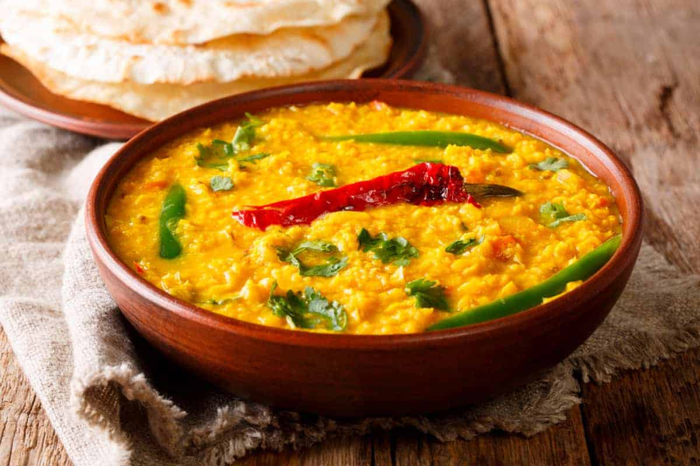
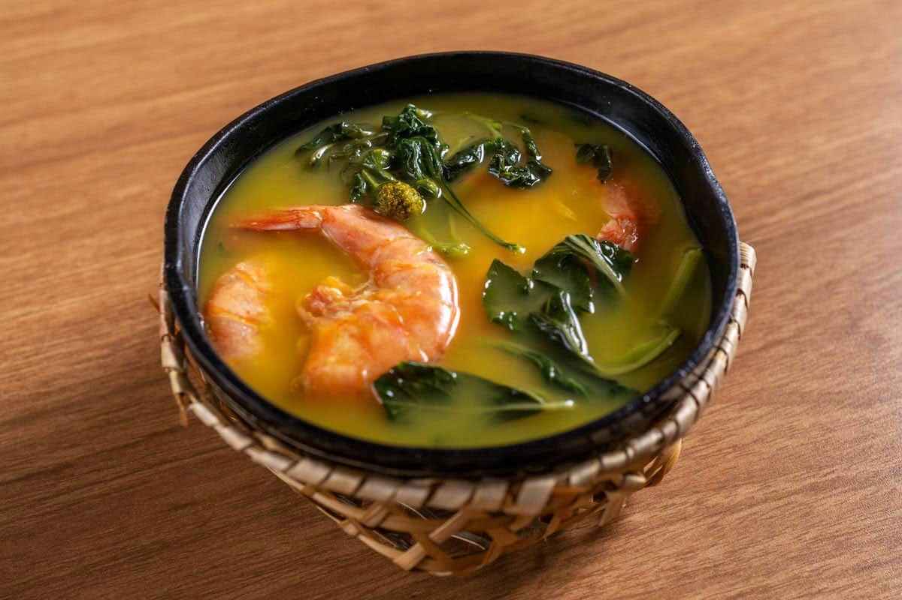
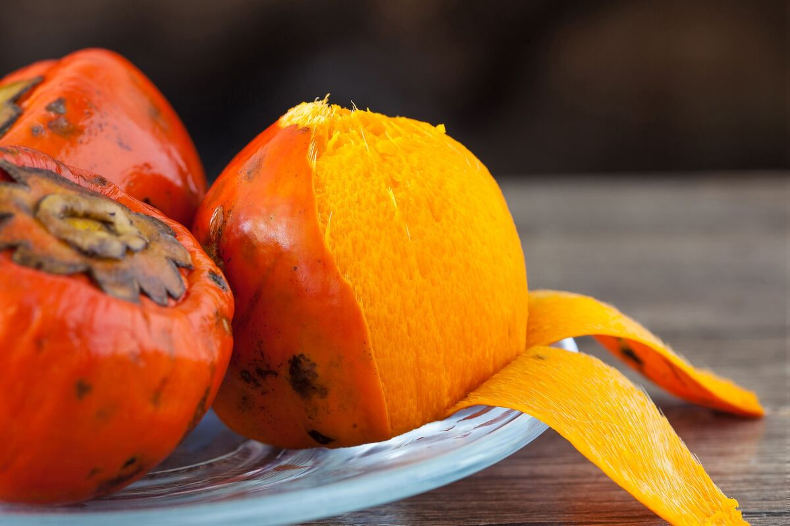
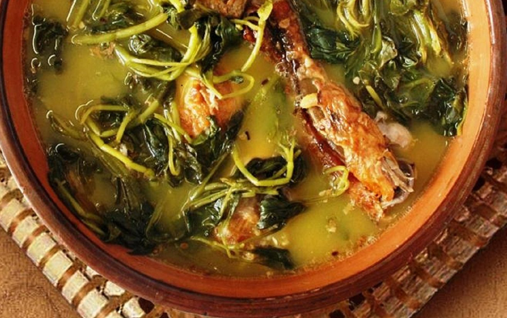
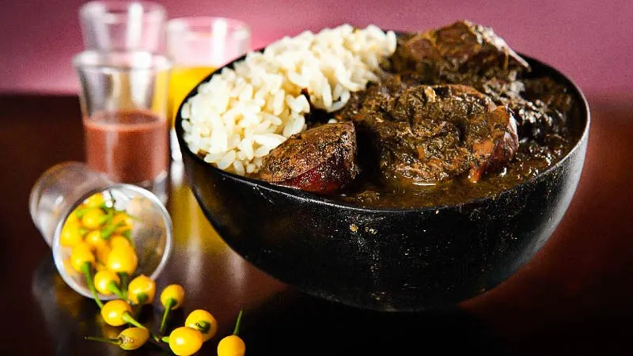
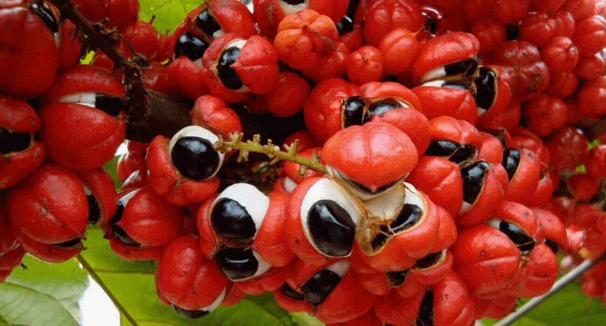
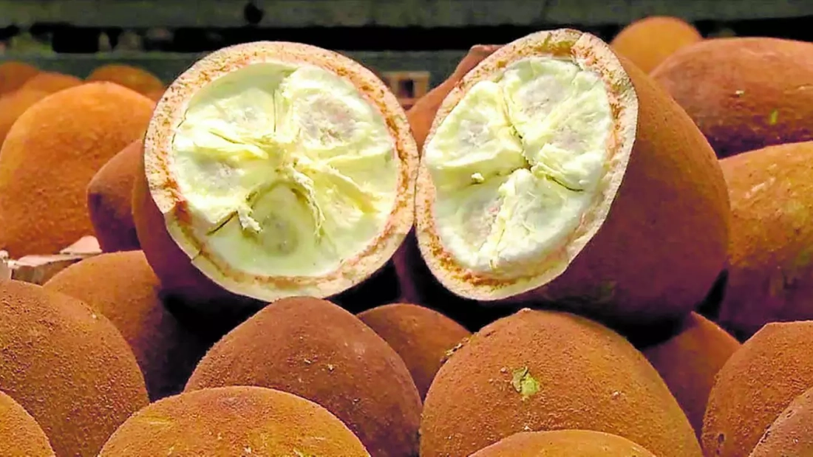
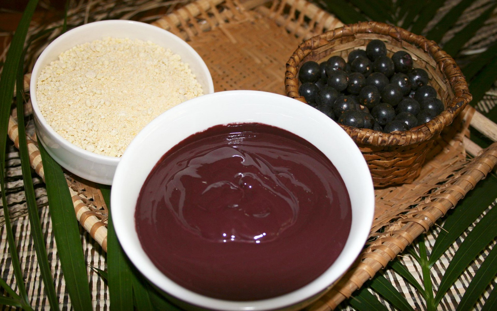
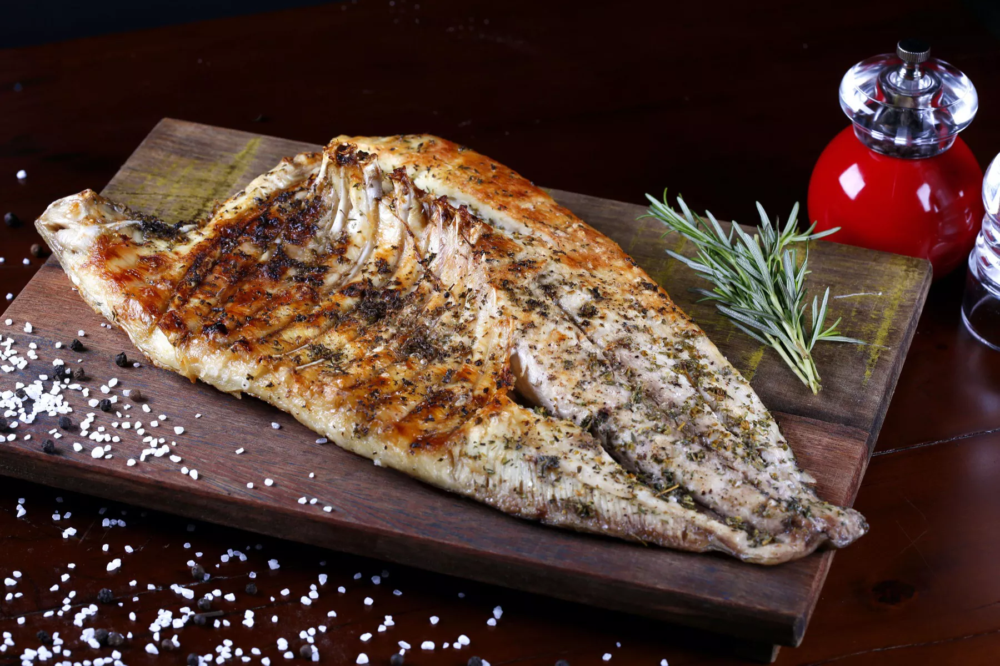

18 de junho de 2024
A história do tacacá remonta às tradições indígenas da região amazônica, especialmente entre os povos tupi-guarani. Originalmente, o tacacá era uma sopa consumida pelos povos nativos como uma refeição nutritiva e reconfortante. Com a chegada dos colonizadores portugueses, o prato sofreu influências e adaptações, tornando-se uma das iguarias mais populares da culinária paraense.
O tacacá é feito com ingredientes típicos da região, destacando-se o tucupi (um caldo amarelo extraído da mandioca brava), a goma de tapioca, o camarão seco e o jambu (uma erva amazônica que provoca uma sensação de dormência na boca). Para preparar o prato, o tucupi é fervido e temperado, sendo então servido quente em uma cuia de porcelana. Sobre o tucupi são adicionadas a goma de tapioca, o camarão seco e o jambu, criando uma combinação de texturas e sabores únicos.
O tacacá é uma iguaria muito apreciada na região norte do Brasil, especialmente em Belém do Pará, onde é vendido em barraquinhas de rua e feiras. Além de ser uma delícia gastronômica, o tacacá também é valorizado por sua importância cultural e por representar a riqueza dos ingredientes e tradições da Amazônia.
ingredientes:
18 de junho de 2024
A história do tacacá remonta às tradições culinárias dos povos indígenas da região amazônica, especialmente entre os povos tupi-guarani. Originalmente, o tacacá era uma sopa consumida como uma refeição reconfortante e nutritiva pelas comunidades indígenas que habitavam a região.
O prato era feito principalmente com ingredientes encontrados na Amazônia, como o tucupi (caldo amarelo extraído da mandioca brava), a goma de tapioca, o camarão seco e o jambu (uma erva amazônica que provoca uma sensação de dormência na boca). Esses ingredientes eram preparados de forma simples e tradicional, seguindo os métodos de cozimento e tempero transmitidos de geração em geração.
Com a chegada dos colonizadores portugueses à região amazônica, o tacacá passou por influências e adaptações. Os colonizadores introduziram novos ingredientes e técnicas culinárias, enriquecendo ainda mais a diversidade gastronômica da região.
Ao longo dos anos, o tacacá tornou-se uma das iguarias mais populares e emblemáticas da culinária paraense, especialmente em Belém do Pará. Hoje em dia, é comumente encontrado em barraquinhas de rua, feiras e mercados, sendo apreciado por moradores locais e turistas como uma delícia gastronômica que representa a riqueza dos ingredientes e tradições da Amazônia.
Ingredientes:
18 de junho de 2024
A história da pupunha remonta às civilizações indígenas que habitavam as florestas da América do Sul há milhares de anos. A pupunha, também conhecida como pupunheira (Bactris gasipaes), é uma palmeira nativa da região amazônica, onde era cultivada e utilizada como uma importante fonte de alimento pelos povos indígenas.
Os povos indígenas da Amazônia domesticaram a pupunheira há milênios, desenvolvendo técnicas de cultivo e processamento para tornar seus frutos comestíveis. A pupunha era uma fonte valiosa de nutrientes, fornecendo carboidratos, vitaminas e minerais essenciais para a dieta dessas comunidades.
Ao longo dos séculos, a pupunheira tornou-se uma cultura importante para as populações indígenas da região amazônica, que utilizavam seus frutos não apenas como alimento, mas também para a produção de óleo, farinha e outras substâncias úteis.
Com a colonização europeia das Américas, a pupunheira atraiu a atenção dos colonizadores, que reconheceram seu potencial como uma cultura alimentar e agrícola. Os colonizadores portugueses e espanhóis introduziram a pupunheira em outras partes do continente, onde ela se tornou uma cultura cultivada em várias regiões tropicais da América do Sul.
Hoje, a pupunha é cultivada comercialmente em muitos países da América Latina, incluindo Brasil, Colômbia, Equador e Peru, onde seus frutos são valorizados por sua versatilidade culinária e valor nutricional. Os frutos da pupunha são consumidos cozidos, assados, em conserva ou processados em produtos como farinha, óleo e ração animal.
Além de seu papel como alimento, a pupunha desempenha um papel importante na conservação ambiental, pois é uma cultura sustentável que pode ser cultivada de forma agroflorestal, ajudando a proteger e preservar as florestas tropicais da Amazônia.
18 de junho de 2024
O Pato no Tucupi é um prato tradicional da culinária paraense, especialmente popular em Belém do Pará. Sua história remonta às tradições culinárias dos povos indígenas da região amazônica. Originalmente, o tucupi, um caldo amarelo extraído da mandioca brava, era utilizado pelos indígenas como um ingrediente culinário essencial.
Com a chegada dos colonizadores portugueses, o prato sofreu influências e adaptações, sendo acrescentado o pato à receita. O pato, uma ave abundante na região, foi cozido no tucupi juntamente com temperos locais, criando assim uma combinação de sabores única e saborosa.
O Pato no Tucupi tornou-se um prato emblemático da culinária paraense, apreciado por sua riqueza de sabores e por representar a fusão de ingredientes e tradições culturais da Amazônia. Hoje, é encontrado em restaurantes, festas e celebrações por todo o estado do Pará, sendo uma iguaria muito apreciada tanto por moradores locais quanto por turistas.
Ingredientes:
18 de junho de 2024
A Maniçoba é um prato típico da culinária paraense, especialmente apreciado durante festas e celebrações. Sua história remonta às tradições culinárias dos povos indígenas da região amazônica, que utilizavam a mandioca brava como um alimento fundamental em sua dieta.
Originalmente, a Maniçoba era preparada pelos indígenas utilizando as folhas da mandioca brava, que são tóxicas devido à presença de ácido cianídrico. Para torná-las comestíveis, as folhas eram cozidas por vários dias, geralmente enterradas em buracos no chão, em um processo de fermentação que neutralizava a toxicidade.
Com a chegada dos colonizadores portugueses, o prato sofreu influências e adaptações. Foram adicionados ingredientes como carne de porco, linguiça, charque e temperos locais, criando uma versão mais rica e saborosa da Maniçoba.
Atualmente, a Maniçoba é um prato emblemático da culinária paraense, apreciado por sua complexidade de sabores e por representar a fusão de ingredientes e tradições culturais da região amazônica. É servida em ocasiões especiais, como festas juninas, casamentos e outros eventos festivos, sendo considerada uma iguaria indispensável para quem deseja conhecer e apreciar a gastronomia paraense.
Ingredientes:
18 de junho de 2024
A história do guaraná remonta às antigas civilizações indígenas da Amazônia, onde a planta é nativa. Os índios da tribo Guaranis, que habitavam a região que hoje compreende o Brasil e o Paraguai, usavam o guaraná tanto para suas propriedades medicinais quanto como estimulante durante rituais e caçadas.
Os Guaranis preparavam uma bebida feita a partir das sementes do guaraná, que eram secas e moídas, formando um pó que era misturado com água para fazer um xarope ou uma espécie de chá. Esta bebida era valorizada por suas propriedades estimulantes e energizantes, ajudando a combater a fadiga e aumentar a resistência física.
Com a chegada dos colonizadores europeus, o guaraná foi gradualmente introduzido na sociedade ocidental. No século XIX, começou a ser cultivado em larga escala na região amazônica brasileira. Com o tempo, o guaraná se tornou um ingrediente popular em bebidas energéticas, refrigerantes e suplementos alimentares devido às suas propriedades estimulantes, além de seu sabor característico.
Hoje, o guaraná é conhecido mundialmente como um ingrediente energético e refrescante, sendo exportado para diversos países e usado em uma variedade de produtos. Sua história e tradição como uma planta medicinal e estimulante continuam a influenciar sua popularidade e uso.
18 de junho de 2024
O cupuaçu é uma fruta nativa da região amazônica, principalmente encontrada no Brasil, Peru e Colômbia. Sua história remonta às antigas civilizações indígenas da Amazônia, onde era valorizada tanto por suas propriedades nutricionais quanto por suas propriedades medicinais.
Os povos indígenas da região amazônica há muito tempo usavam o cupuaçu não apenas como alimento, mas também para fazer remédios naturais para tratar uma variedade de doenças. A fruta também desempenhou um papel importante em rituais e tradições culturais dessas comunidades.
No entanto, foi apenas mais recentemente que o cupuaçu ganhou destaque fora da região amazônica. Nas últimas décadas, houve um aumento no interesse pelo cupuaçu devido ao seu sabor único e às suas potenciais propriedades antioxidantes e nutritivas.
Hoje, o cupuaçu é usado em uma variedade de produtos, incluindo sucos, sorvetes, doces, cosméticos e até mesmo em produtos de cuidados com a pele. Sua popularidade continua a crescer, não apenas na América do Sul, mas também em outras partes do mundo, onde é apreciado por seu sabor tropical e pelos potenciais benefícios à saúde.
18 de junho de 2024
O açaí é uma fruta nativa da região amazônica, principalmente encontrada no Brasil, especialmente nos estados da região Norte. Por muitos séculos, as comunidades indígenas da Amazônia têm usado o açaí não apenas como alimento, mas também por suas propriedades medicinais.
Originalmente, o açaí era consumido pelas tribos amazônicas em forma de mingau, feito a partir da polpa da fruta. Era uma parte importante da dieta dessas comunidades devido à sua abundância de nutrientes e ao seu potencial energético.
Ao longo do tempo, o açaí começou a ganhar destaque fora da região amazônica. Nas últimas décadas, sua popularidade explodiu no Brasil e em todo o mundo devido aos seus alegados benefícios para a saúde, especialmente como uma fonte de antioxidantes e ácidos graxos essenciais.
Hoje, o açaí é amplamente consumido em diversas formas, principalmente como açaí na tigela, um prato feito com açaí congelado batido e servido com granola, frutas frescas e outros acompanhamentos. Além disso, o açaí é frequentemente utilizado na produção de sucos, sorvetes, doces, vitaminas e até mesmo em produtos de cuidados com a pele, aproveitando seus benefícios nutricionais e suas propriedades refrescantes. Sua história como um alimento tradicional amazônico evoluiu para se tornar um fenômeno global, presente em diversas culturas e culinárias ao redor do mundo.
18 de junho de 2024
A culinária paraense é conhecida por sua riqueza e diversidade de peixes e frutos do mar, devido à abundância de rios, lagos e áreas costeiras na região. Aqui estão alguns dos peixes mais comuns e populares utilizados na culinária paraense: